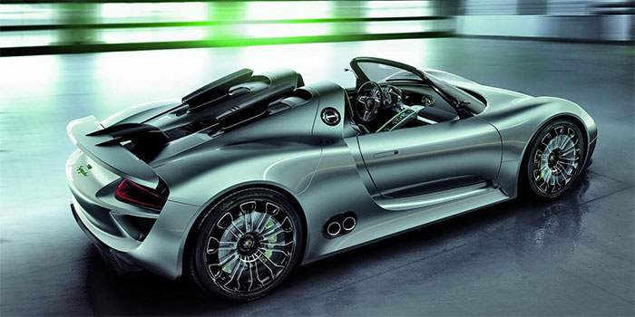

保时捷

保时捷（Porsche)，是德国大众汽车集团旗下的豪华汽车品牌，又叫波尔舍，总部位于德国斯图加特，是欧美汽车的主要代表之一。主要车型有911、Boxster、Cayman、Panamera、Cayenne、Macan。
1931年，保时捷成立于斯图加特，以生产高级跑车闻名于世界车坛。创始人费迪南德·波尔舍（同费迪南德·保时捷）是一位享誉世界车坛的著名设计师。
2018年12月18日，世界品牌实验室编制的《2018世界品牌500强》揭晓，保时捷排名第60位。 [1] 2019年10月，Interbrand发布的全球品牌百强榜排名50。
保时捷汽车
保时捷创建于1930年，其历史可追溯至1900年。现在是德国汽车界四大金刚（另为奔驰、宝马、大众）之一。作为全球最佳跑车之一，保时捷代表着运动性、出众的日常实用性、全方位的经济性和名副其实的环境兼容性的完美结合。
保时捷 与如今在中国知名度最高的德国大众汽车公司同“父”— —即德国的费迪南·保时捷博士。创建之初，它只不过是德国一家不大不小的汽车设计研究所，也是世界上知名度最高的高速汽车生产商之一。
保时捷介绍